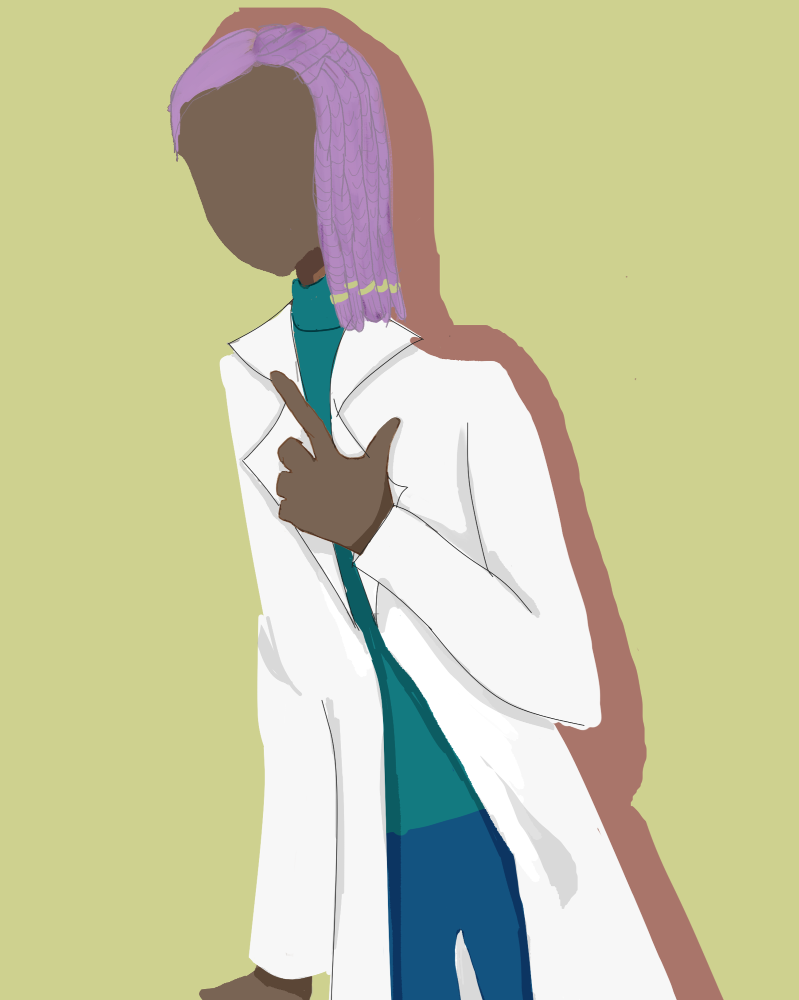

Vosto全域資料庫
Vosto全域資料庫
「骯髒的地方，看了就討厭。」
白琰程是來自某個尚未編號的失落森林的捕鳥蛛，在沃斯托境外有著特殊的技術與個人土地，命名為A-0001。
| 白琰程 | |
|---|---|
 |
|
| 姓名 | 白琰程 |
| 生日 | ？月？日 |
| 年齡 | 47歲 |
| 性別 | 男 |
| 身體資訊 | 191公分 | 80公斤 |
| 愛好 |
肉 陰暗但潮濕的洞穴or房間 解剖 花言巧語 |
本體：
臉是灰色的，有兩隻偏大的附屬肢，用來撕碎食物，倒鉤狀，有四隻眼睛，兩大兩小，大的兩顆眼睛都是全黑的，瞳孔是白色的，小的有一圈一圈的構造，似乎有迷幻作用，頭上有透明的頭殼，可以直接看到粉色的大腦和藍色的組織液，嘴巴在下巴，打開後並沒有牙齒，脖子配戴金色的翅膀，是某次捕獵到的獵物，肩膀兩側有深咖啡色高舉的手，平時手部動作是做成三角形的，暗示自己是王，可以自由操控。
胸口有很長的撕裂傷，露出來的卻是人類的五臟六腑，平時不穿衣服，只有手帶著很長的袖套，與下半身的連結是一顆透明的球，很堅固，像是水晶球那樣，裡面有一顆連接著神經的綠色眼睛和組織液，可以轉向360度，但是沒有視力。
胸部跟腹部是橙黃色的，他有八隻淺咖啡色的腳，都是人類腳的模樣，左右都是四隻，前面兩隻是扭曲交叉在一起擋住自己繁衍後代的工具，左腿是一顆綠色的眼睛，有亮粉色的眼影，留著類似血的液體，一樣沒有是視力，右腳是正在笑吐著舌頭的嘴巴，塗著亮粉色的口紅留著組織液和口水，但不是進食的嘴巴。
剩下的六隻腳都有放動物的頭骨，左二是放人類的，左三放羊的，左四放老鼠的；右二是放公鹿的，右三是放青蛙，右四放蛇，六隻腳的關節處都有兩顆眼睛，分別在膝上、膝上，六雙的眼睛都不同，是一對一對的，有一些些視力，左三跟右三都有剛毛。
腹部上三分之二是透明的裡面養著小小魚還有海草，死後小魚跟海草過一陣子才會死，出生時就有，魚是橙色的熱帶魚，下面三分之二都是消化系統和心臟，還有毛。
背著陶瓷感的鍋子，裡面不知道在煮甚麼，裡面的像是水的液體是身體過多的組織液，也是從出生就有，會隨著一次次的退殼變大，還有一隻木頭的攪拌棒，雖然體型巨大，但是可以縮小成可以爬上成年人手掌的大小，但這也是最小的模樣，可以在這之間自由的縮放，由大變小時可能造成組織液流出，而把四周用的黏且濕答答。
退殼前前一個月裡面不會有東西，但是腿上的嘴會比平時還多的口水，因為改成那邊排出組織液，退殼需要一個禮拜至三個禮拜。
人形：
可化人形，但是對他來說有些拘束，跟縮小一樣他並不怎麼喜歡，但是經過社會化，所以也只能習慣，膚色是偏向咖啡色的，打從初次人形便是這個顏色，左邊頭髮是綁髒辮向後用到後面，會跟著後面的頭髮一起弄到右邊，右邊留長至肩膀，基本上都不會綁起來，像是半龐克頭的感覺，顏色是淺紫色的。
眼睛一樣是全黑的，寂靜的感覺，貼近看可以發現裡面裝著你的身影，但是瞳孔是白色的，由於有定期且規律的健身，因此肌肉線條明顯，但不嚇人，左手少了一根小姆指，對他來說生活並沒有過大的差異，只是有時沒注意到抓取東西會掉落，然後快速的變出一隻附屬肢去接，臉型是偏向橢圓的，不常露出笑容，眼角上揚看上去很有精神，眼神中帶著一點瘋狂，指甲會定期剪，剪到沒有白色的部分，下巴有一些鬍渣，腿跟手有較長的毛，但不濃密。
動物型態：體長10.5公分 足展26公分 156公克
呈現亮橘色，身體、腹部和腿上都有剛毛，二公分的尖牙，腳總共有五節。
齒中攜帶毒液，但毒性相對較低，其作用與黃蜂的叮咬相當，剛毛可以發出摩擦聲，用後腿摩擦腹部，這些螫毛對人類有害，通常是造成搔癢，但可能更嚴重，只有自我防衛時這麼做。
做事大膽且瘋狂，但是看似瘋狂的底下，他在他的頭腦裡已經經過縝密的計畫了，雖然有時成功機率很低，但他還是會去做，對他來說不管怎樣，機率只有零跟一百，是個很囂張的人，每次都幸運的活下來，對於曾經幫助過自己的人都會有深刻的印象，就算忘記，只要稍微提一下就會再次想起來，他會盡力去幫助對方，即使對方一直說不用，這大概是屬於他的倔強。
很不擅長等待，他覺得約好時間對方應該出現才對，他不理解為什麼無法守時，所以時間一到沒看到人就會瘋狂去催，如果對方還是拖拖拉拉，他會直接放那個人鴿子，而且是非常生氣的，除非是真的有事情，否則他絕對無法原諒，若是對方是個準時的人卻遲到反而會開始擔心對方是不是路上出了甚麼事情，會想辦法找到，如果找不到會一直擔心著，直到聯繫上。
他非常自律，做任何事情非常要求自己，舉凡作息、獵食、任務，下至料理、整潔、運動，他都會在特定的時間去做，不喜歡有人打擾到自己，他甚至為自己規劃出社交時間，在那段時間，他認為自己是最棒的狀態，但是規律的作息和運動，其實已經讓他在任何時間是最佳的了，不過他是夜行性動物，因此許多人覺得他沒有在睡眠。
講話通常都是沒禮貌的，因此冒犯許多人，但也吸引了一群與他相似性格的人，想做甚麼就會去做，前面說過他擅長計畫，所以大機率會成功，但是不把計畫告訴別人讓他人認為是不講理的，即使成功也會被他人認為剛好而已，但他其實做很多努力，也是個機會主義者，做這件事情他只要覺得有機會就會去做，不論是什麼事情。
在某一次的降雨，他與他的同批一起誕生了，沒過多久的上就多了許多隻小蜘蛛，遍地的小蜘蛛到處慌亂的爬行，母蜘蛛並不會親自帶幼仔，但是他靠著從古至今刻在基因裡的記憶存活下來，也漸漸的對這個廣大的世界越來越了解，看著同批出生的手足逐漸死亡他並沒有甚麼感覺，物競天擇、弱肉強食，對他來說是那些只是自然界中每天都會發生的事情。
人類似乎稱他們為超巨型捕鳥蛛，他親眼見過被抓走的同類們那些人都這麼稱呼他們的，但他最喜歡的並不是鳥，而是海鮮，不過他還沒當人時最喜歡的是青蛙，那東西好抓而且味道很好，身長越來越長的他，巢也逐漸變大，在進食時他會特意留下動物的頭骨當作戰利品，為這件事情他感到驕傲，一切都非常安穩，一成不變的生活加上偶爾出現的驚喜，他就覺得很滿足了。
直到某次，某個人類打擾了他，為了自保他咬了那個人一口，沒想到就此昏厥，而那個人也因為疼痛把他扔了出去，逃之夭夭，等他醒來時已經過了五天，他蠻驚訝自己居然沒有被大型鳥類吃掉或是被他肉食動物吃掉，不過能活下來也是一種奇蹟，從此，他便可以在人類與這個狀態隨意的切換了。
會發現的原因是因為，在那一個月裡不斷的做到相同的夢，夢裡他變成一個全身沒穿衣服的人類在各個地方不斷的體驗各種事物，他非常清楚那種變化，真實到他無法分辨出究竟是真實的或是假的，事實是，他夢到那個夢時，他真的變成了人類，醒來後就變回來，在一次無聊時，他是了一次那種感覺，他成功變成人類，但時間並不長，長達兩個月的練習，他也發現並沒辦法半人半蛛，不過他可以自由的控制轉變能力，後來他去了人類社會學會了更多東西，不過他覺得人類其實也不怎麼方便，所以不常人型。